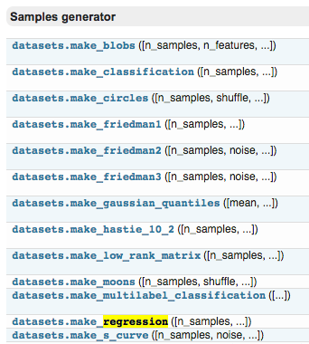

sklearn 强大数据库
作者: Alice 编辑: 莫烦 2016-11-03
学习资料:
今天来看 Sklearn 中的 data sets，很多而且有用，可以用来学习算法模型。
要点
eg: boston 房价, 糖尿病, 数字, Iris 花。
也可以生成虚拟的数据，例如用来训练线性回归模型的数据，可以用函数来生成。

例如，点击进入 boston 房价的数据，可以看到 sample 的总数，属性，以及 label 等信息。

如果是自己生成数据，按照函数的形式，输入 sample，feature，target 的个数等等。
sklearn.datasets.make_regression(n_samples=100, n_features=100, n_informative=10, n_targets=1, bias=0.0, effective_rank=None, tail_strength=0.5, noise=0.0, shuffle=True, coef=False, random_state=None)[source]
接下来用代码练习一下。
导入模块
导入 datasets 包，本文以 Linear Regression 为例。
from __future__ import print_function
from sklearn import datasets
from sklearn.linear_model import LinearRegression
import matplotlib.pyplot as plt
导入数据－训练模型
用 datasets.load_boston() 的形式加载数据，并给 X 和 y 赋值，这种形式在 Sklearn 中都是高度统一的。
loaded_data = datasets.load_boston()
data_X = loaded_data.data
data_y = loaded_data.target
定义模型。
可以直接用默认值去建立 model，默认值也不错，也可以自己改变参数使模型更好。
然后用 training data 去训练模型。
model = LinearRegression()
model.fit(data_X, data_y)
再打印出预测值，这里用 X 的前 4 个来预测，同时打印真实值，作为对比，可以看到是有些误差的。
print(model.predict(data_X[:4, :]))
print(data_y[:4])
“”“
[ 30.00821269 25.0298606 30.5702317 28.60814055]
[ 24. 21.6 34.7 33.4]
”“”
为了提高准确度，可以通过尝试不同的 model，不同的参数，不同的预处理等方法，入门的话可以直接用默认值。
创建虚拟数据－可视化
下面是创造数据的例子。
用函数来建立 100 个 sample，有一个 feature，和一个 target，这样比较方便可视化。
X, y = datasets.make_regression(n_samples=100, n_features=1, n_targets=1, noise=10)
用 scatter 的形式来输出结果。
plt.scatter(X, y)
plt.show()
可以看到用函数生成的 Linear Regression 用的数据。
noise 越大的话，点就会越来越离散，例如 noise 由 10 变为 50.
X, y = datasets.make_regression(n_samples=100, n_features=1, n_targets=1, noise=50)
plt.scatter(X, y)
plt.show()
如果你觉得这篇文章或视频对你的学习很有帮助, 请你也分享它, 让它能再次帮助到更多的需要学习的人. 莫烦没有正式的经济来源, 如果你也想支持 莫烦Python 并看到更好的教学内容, 赞助他一点点, 作为鼓励他继续开源的动力.